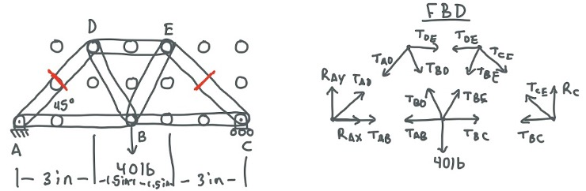
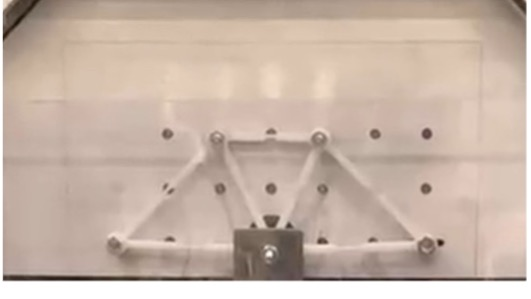

(08)
Truss Structure
Designing and fabricating a lightweight truss structure to withstand a 40-pound load.
Overview
I worked with a team to design and fabricate a lightweight truss structure capable of supporting a 40-pound center load while minimizing overall weight. The project required balancing structural performance with manufacturability by applying statics, stress analysis, and failure theory throughout the design process.
Starting from a set of candidate geometries, we analyzed, fabricated, and tested a physical prototype to compare analytical predictions with real-world performance.
Concept Development
We began by generating nine candidate truss configurations that satisfied the project's geometric and loading constraints. For each concept, we calculated the internal member forces under the design load and compared their structural efficiency.
Using these calculations, we evaluated the strength-to-weight ratio of each design and selected the configuration that provided the best balance between structural capacity and material usage. After selecting the final geometry, we modeled the complete assembly in SolidWorks to verify dimensions and prepare the design for fabrication.
Engineering Analysis
We applied two-dimensional equilibrium to determine the reaction forces and internal loads carried by each truss member. These results were then used to perform stress analysis and size the members to withstand the target loading while minimizing unnecessary weight.
By combining structural calculations with the material properties of the acrylic, we determined the required member dimensions and verified that the design satisfied the desired factor of safety before fabrication.


Fabrication
After finalizing the design, we generated DXF files from the CAD model and prepared the components for laser cutting in CorelDRAW. The acrylic members were fabricated and then assembled using screws and bolts to produce the final structure.

Results
During destructive testing, the truss failed at approximately 38 pounds, closely matching the intended 40-pound design target. The project demonstrated how analytical predictions translate to physical performance and highlighted the importance of validating engineering calculations through testing.
This project gave me hands-on experience applying structural mechanics throughout the engineering design process, including concept selection, engineering analysis, CAD modeling, fabrication, assembly, and experimental validation.